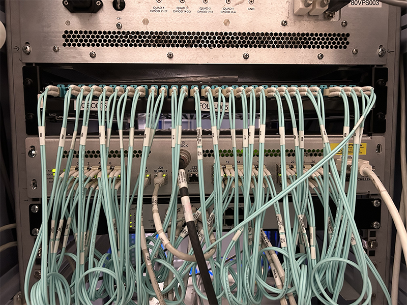
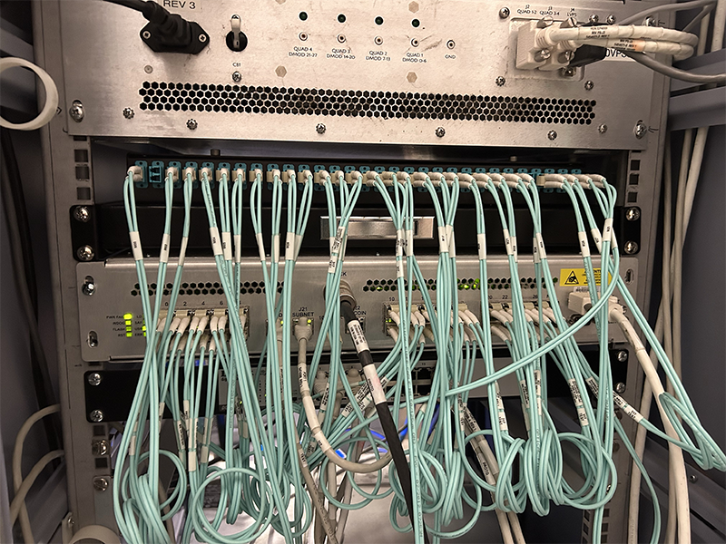

- 00000018WIA304DD030GYZ
- id_123741541.16
- Sep 16, 2025, 8:13:01 PM
Replacing the fiber-optic breakout box
Prerequisites
| Personnel requirements | |||
|---|---|---|---|
| Required persons | Preliminary requirements | Procedure | Finalization |
| 1 | 5 minutes | 30 minutes | 5 minutes |
| Tools and test equipment | |||
|---|---|---|---|
| Item | Quantity | Part number | Manufacturer |
| T-10 Torx Screwdriver | 1 | - | - |
| Nonmagnetic Titanium Service Tool Kit, Large Set | 1 | 5112581 | - |
| Standard 5/64 Allen Wrench | 1 | - | - |
| Consumables | |||
|---|---|---|---|
| Item | Quantity | Part number | Manufacturer |
| Electrical Insulating Tape | As needed | - | - |
| Cable Tie Wraps | As needed | - | - |
| Replacement parts | |||
|---|---|---|---|
| Item | Quantity | Part number | Manufacturer |
| Fiber-Optic Breakout Box | 1 | 5453807 | - |
| Safety | ||||
|---|---|---|---|---|
|
Before working in any GE HealthCare MR suite or doing any GE HealthCare service procedure, you must:
If you have any safety concerns at any time, do not begin work or immediately stop work and move to a safe location. Immediately contact your supervisor or site safety officer for instructions on how to proceed. | ||||
| ||||
About this task
This procedure is to replace the fiber-optic breakout box located in the PET cabinet. There are two types of fiber-optic breakout box configurations. Depending on the configuration installed, different replacement procedures will be required. Determine which configuration applies to the system and follow the replacement procedure below.
The fiber-optic breakout box comes preinstalled on a tray with the inner and outer rails attached. Configuration 1 is no longer available as a FRU. Configuration 2 must be used for all fiber-optic breakout box replacements.
Note The FRU part number (5453807) is the same for both configuration 1 and configuration 2.
- If configuration 1 is installed in the PET cabinet, the new fiber-optic breakout box will need to be removed from the preinstalled tray and from the inner/outer rails. It will be installed on the existing tray and inner/outer rails.
- If configuration 2 is installed in the PET cabinet, the new fiber-optic breakout box is a drop-in replacement.

